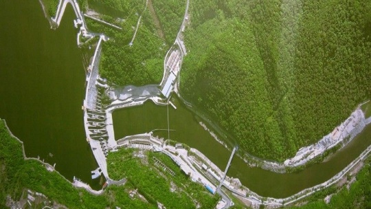
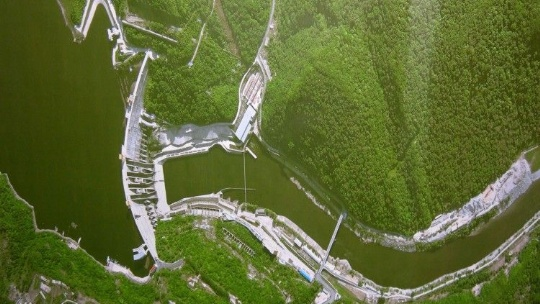
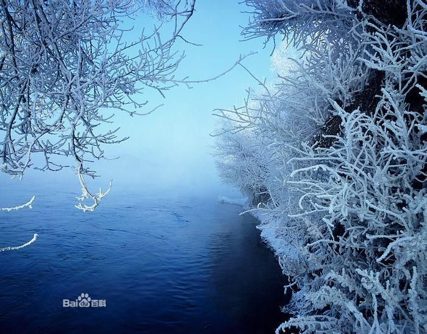
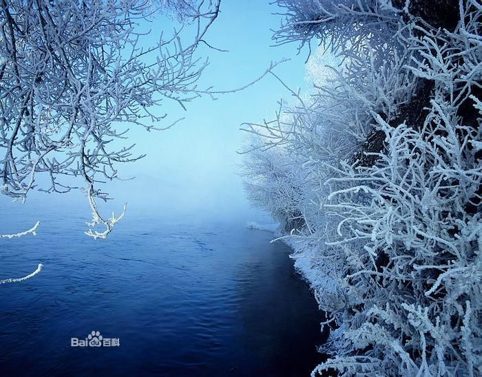
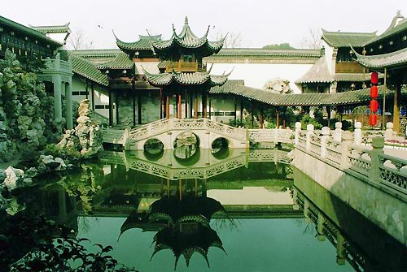
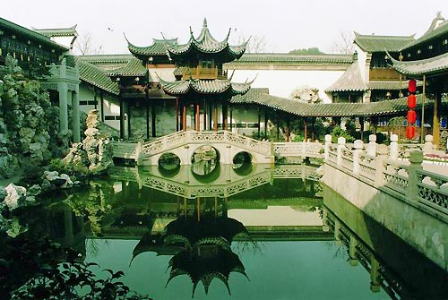
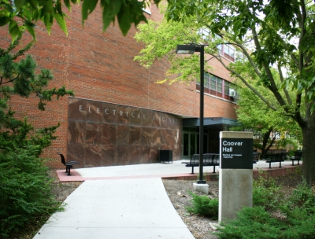
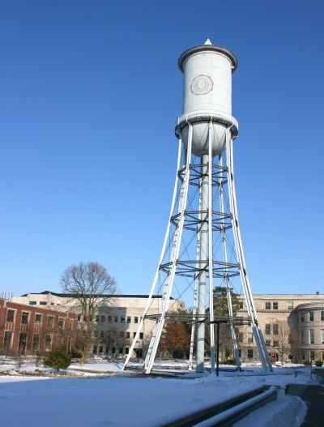
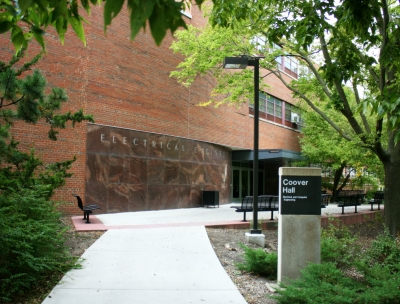
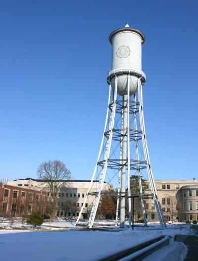

About Me
Guangchao Geng was born and raised in Jilin City, China, a popular tourist destination in Northeast China for its magnificent rime ice view on the banks of Songhua River. His father is a electrical engineer of Baishan hydropower plant and his mother is a physician.
After high school, he was admitted to Mixed Honors Class program in Zhejiang University (ZJU) in 2005 and joined Laboratory of Power System High Performance Computing at ZJU in 2007. In 2009, he earned his B.E. in electrical engineering with Chu Kochen Honors and started to pursue his Ph.D. in electrical engineering at ZJU, with the emphasis on power system stability and control. His advisor is Professor Quanyuan Jiang.
Currently, he is a visiting student in Dr. Ajjarapu's group at Iowa State University, working on a research project on stability constrained optimal power flow.
External Links
Travelogue
Weibo (Chinese Twitter)
Stories of Places
Catelog
- Baishan Hydro Plant
- Jilin City
- Hangzhou
- Ames
Baishan Hydro Plant
Because of my father's job, I visited this hydro plant many times in my childhood. At that time, I had no idea about the engineering achievement behind generators and turbines, only fascinated by its astonishing dimension and roaring shaft. It was the first impression of modern technology to a boy in a rural mountainous town. In fact, Baishan hydropower plant was once the largest hydro plant in Asia. Even today, with its total installed generation capacity (1,800 MW including 300 MW pumped-storage), it is still the largest hydro plant in Northeast China area. Also, it hosted one of the first field projects of nonlinear robust power system stabilizer (NR-PSS) in China, led by Dr. Qiang Lu (IEEE Fellow 2003) from Tsinghua University.
From 1990s, with the upgrade of remote control systems, the plant operators were able to monitor and control these generation units remotely from nearby large cities, where the living conditions for plant employees could be greatly improved. So my family moved following the migration of the hydro plant control center, from a rural town Baishan to a municipal county-city Huadian and further to a large prefectural-level city - Jilin City, more than 100 miles away from the plant site. It is interesting and proud to say that my childhood and early school days followed the technical evoluation of this hydropower plant.
Keeping the curiosity and admiration on electric power from the childhood in mind, I decided to select electrical engineering as my major when I finished my first two-year engineering fundmental courses in Mixed Honors Class program. I determined to find out the stories, theroies and techniques behind a single hydro plant, and further discover the complicated system that it connected - the power grid.
 



Jilin City
 



Hangzhou
 



Ames
 


